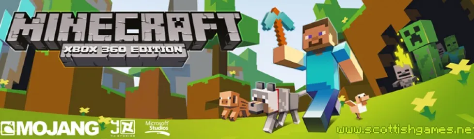

Minecraft Xbox 360
Minecraft is a game made up of blocks, creatures, and community. You can survive the night or build a work of art – the choice is all yours. But if the thought of exploring a vast new world all on your own feels overwhelming, then fear not! Let’s explore what Minecraft is all about!
↓ Download